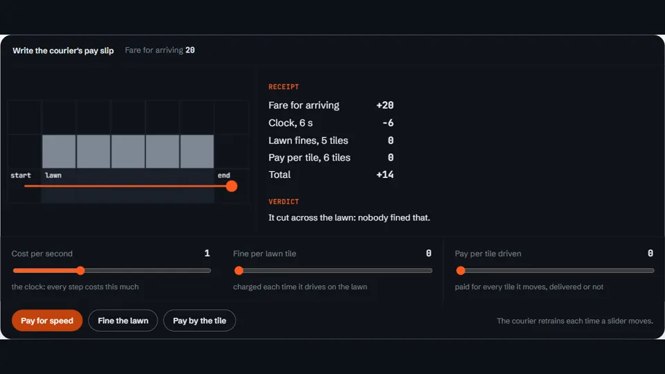

It does what you pay for
An agent never knows what you meant, only what the pay slip says. It tries things, keeps whatever earns more, and drops whatever earns less. So the slip has to say everything you care about. Whatever it leaves out, the agent treats as free.
Cutting across the park
Pay only for speed and the shortest path wins, even over a lawn. The fix is a fine on the lawn, big enough that the longer road becomes the cheaper trip.

Running red lights
Once the park is fined, the next cheapest trick appears: a red light costs nothing, so the agent drives straight through. Each rule you add closes one loophole and shows you the next.
Driving the wrong way
Fine the red lights too, and a one-way street is the next shortcut: going the wrong way down it saves a block and breaks no rule you wrote.
Paying by the mile
The cautionary end: pay for every tile driven and the best plan is to never finish. The agent loops for ever, collecting more than the fare would ever give it.

What to try
Start with the clock only and watch it take the shortcut. Fine the shortcut and see the road win. Then pay by the mile and watch it stop arriving at all. Each time, ask what the slip really says, not what you meant.